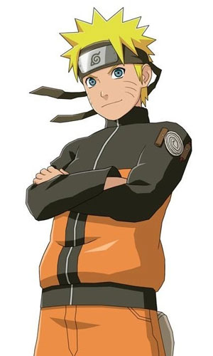

All about Naruto
Introduction

Naruto Uzumaki is a shinobi of Konohagakure
and a descendant of the Uzumaki clan. He became the jinchūriki of the
Nine-Tails on the day of his birth — a fate that caused him to be shunned
by most of Konoha throughout his childhood. After joining Team Kakashi,
Naruto worked hard to gain the village's acknowledgement all the while
chasing his dream to become Hokage.
A little background perhaps
- Naruto was born on the night of October 10th to Minato Namikaze
(the Fourth Hokage) and Kushina Uzumaki (the second jinchūriki of the
Nine-Tails)
- On the day of his enrolment in the Ninja Academy, Naruto first
met Hinata Hyūga, who was being picked on by three bullies.
- In the Academy, Naruto became a student of Iruka Umino, who acted as
a surrogate older brother to keep him in line and help him work harder
- Naruto also met his class-mate Sasuke Uchiha and tried to befriend
him, since he was alone as well.